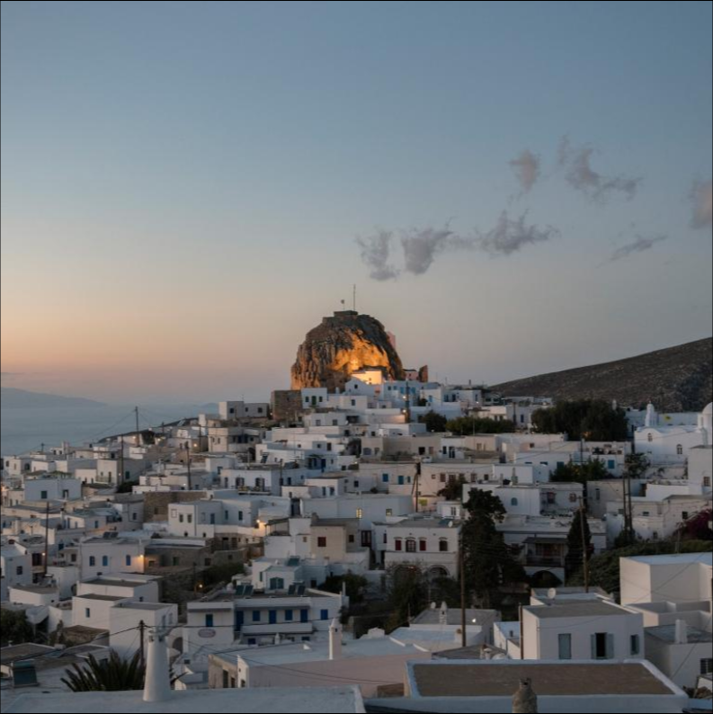

Greece: Amorgos
She arrived a tourist.
The island’s beauty
inspired her to
become
its sole nun.
Decades after her first visit,
Sister Irini returned
to Amorgos to
live in an old monastery she restored herself.
It’s 3:30 a.m. when I disembark the ferry in a trance
after a 10-hour sail from Athens. The air is soft
and warm in Amorgos, a pristine island off the coast
of Greece. Wooden fishing boats rock against their
moors, lit villages dot the high hills, and a sweet
scent of sage laces the morning air. Once the day
starts, it’s on to the reason I came here: to look
for Sister Irini.
Amorgos's many monasteries, among the oldest in the world, draw
tourists by the thousands, mostly from France, Italy, and Greece,
and its unparalleled beauty—rough and raw with azure blue seas and
sky—cause one to slow down and linger. One tourist has lingered so
long she is now a practicing nun.
Seven years ago, Sister Irini
began transforming a long-abandoned monastery into an oasis. Visitors come throughout the year to walk
her bountiful garden lined with Byzantine frescos, to hear her story,
and to purchase her magnificent paintings of religious icons.
She first came to the island as a young mother and wife 35 years ago;
after her husband passed, she chose a new path. Her name is Sister Irini,
now, and she remains Amorgos’s only nun.
Cloaked in a black habit, she welcomes me on a tour of her home,
expressing her love for faith, her garden, and life as a nun. Later,
when I ask about her prior name and life, she withholds.
“Last names don’t exist as a nun.” Sister Irini takes a long pause.
“I had to divorce myself from my brothers and sisters. I waited until
my children were independent.”

Sister Irini moved to Amorgos and took her vows as a Greek Orthodox nun in 2011. She spends her days
gardening,
painting, and praying, but always welcomes visitors to her monastery, Agios Georgios Valsamitis (or St.
George
Valsamitis).
“It was empty and alone, and I had to work hard to make it paradise,” she says. “It really is paradise!”
Valsamitis appears Eden-like after an exhilarating ride up dusty roads, trying to avoid unruly, wandering
goats. Its lush shade is a gift in the blistering afternoon sun and the cool landscape: a small miracle.
The
monastery sits upon an ancient well, previously a water oracle where 17th-century water readers foretold
believers’ futures through the blessings of St. George. The Church is opposed to such notions, so the
bishop
had the well cemented shut in 1967.
Still, the 30 fruit trees that Sister Irini lovingly planted are clearly drinking from the spring. As I
stroll
under the protective boughs of oranges, lemons, apricots, peaches, and olives, cats lounge amid beds of
flowers, stretching and yawning without a care in the world.
“The cats were sick,” says Sister Irini, “but I brought in doctors and now they’re happy.”
Life on Amorgos
It’s not difficult to see what could have first attracted her to a permanent life on Amorgos: It’s a
respite
from the outer world. Imagine leaving everything behind for a place where the sun-lit sea of diamonds
shines by
day and sailboats clink beneath a starlit sky at night.
With only two Motto machines (ATMs) that are often devoid of money, the thousand or so year-round residents
simply barter among themselves. Homegrown or fresh-caught food is served alfresco and prepared on the spot,
albeit leisurely. Everything in Amorgos moves slower, but it’s worth the wait. Rich coffee brews in copper
pots
on heated sand. Piping hot baskets of sardines are served with feta cheese—crispy, salted, or
chilled—alongside
morning-picked tomatoes and olives with warm baked bread.
The food tastes of the sea. Unlike Sister Irini’s monastery, most of the island is dry and craggy. I hike
two
hours on traditional footpaths, lined by ancient stone walls, to the villages of Tholaria, Langkada, and
Aegiali to visit the island’s other monasteries—a trek others make in reverse every week to visit Sister
Irini
in the village of Chora.
“Every Saturday the priests come and share eggs and we hug and talk,” says Sister Irini. “It’s one of my
favorite things.”
The Greek Orthodox priests reside in the island’s more famed monastery. Established by Byzantine emperor
Alexius Comnenus in the late 11th century, Hozoviotissa perches high on a cliff. It’s rumored the Louvre
has
tried to acquire it for years. Gems, jewels, and gold adorn the altar; Rolexes, emeralds, and diamonds
gleam in
locked glass cabinets, gifts left by spiritually inspired tourists from around the world.
As magnificent as these lavish gifts may appear, this monastery’s finest blessing may be its unparalleled
views
of the famous blue cove of Aghia Anna. After a leisurely hour’s hike downhill, I wade through the shallow
water
into a cool cave, allowing the salty sea to cleanse the day’s heat.
In a landscape this heavenly, it’s easy to understand Sister Irini’s choice to devote herself to a simple,
holy
life.
“The quiet, sunrise, sunset—everything!” she says. “I love everything.”
Know before you go
After landing in Athens, visitors can take the 5:30 p.m. ferry from the Port of Piraeus for the 10-hour
sail to
Amorgos, where cars are available to rent and can be arranged by your hotel. Lodging varies from five-star
hotels to simple bed-and-breakfasts.
Must-see stops include Hozoviotissa Monastery, open from 8:30 a.m. to 2:00 p.m. and then again from five to
seven (make sure to check the dress code); Aghia Anna, where classic film Le Grande Bleu was shot (avoid
midday
crowds); and Sister Irini’s own St. George Valsamitis. Sister Irini welcomes tours, which can be arranged
by
your hotel or online through multiple tour companies.